Học kỳ 1, năm học 2026–2027 · Trường Đại học Công nghệ · Đại học Quốc gia Hà Nội
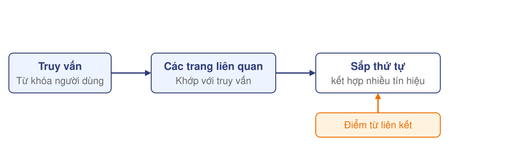
PageRank cung cấp điểm quan trọng theo liên kết để hỗ trợ xếp hạng các trang liên quan.
Nguồn: MMDS, mục 5.1.1 và 5.1.6.
Giả định quy mô: \(n = 10^{9}\) trang web.
Ma trận liên kết đặc có \(n^{2} = 10^{18}\) ô.
Với quy ước 8 byte mỗi ô:
\(10^{18} \times 8 = 8\times 10^{18}\ \text{byte} = 8\ \text{EB}\).
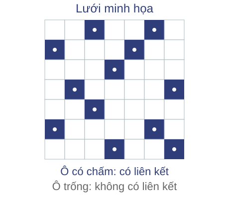
Đồ thị thưa có ít liên kết so với số cặp trang: có thể chỉ lưu các liên kết tồn tại.
Quy mô giả định theo Stanford CS246, trang PDF 51; đổi quy ước thành 8 byte/ô. MMDS 5.2.1.
Nhân ma trận–véc tơ.
Phân chia phép tính bằng MapReduce.
Xác định điểm từ liên kết.
Tính điểm trên đồ thị lớn.
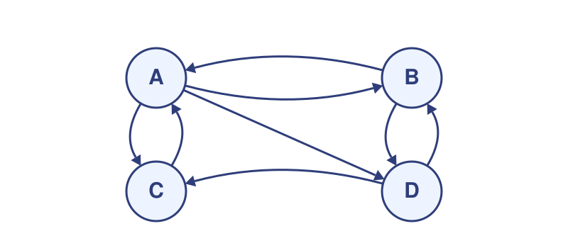
Mỗi trang có một điểm.
Sắp thứ tự các trang theo điểm.
Từ mạng liên kết giữa các trang, tìm một điểm quan trọng cho mỗi trang và sắp các trang theo điểm đó.
Đồ thị có hướng \(G=(V,E)\), \(n=|V|\) trang, \(m=|E|\) liên kết.
Cạnh \(j\to i\): trang \(j\) trỏ tới trang \(i\).
Điểm \(r_i\ge 0\) cho mỗi trang, quy ước \(\sum_i r_i=1\).
Thứ tự giảm dần theo điểm; cho phép đồng hạng.
Miền xét: \(G\) hữu hạn, \(n\ge 1\); hai liên kết cùng nguồn cùng đích gộp thành một cạnh.
\(n=4\) trang, \(m=8\) liên kết.
| Trang | Liên kết ra tới | Bậc ra |
|---|---|---|
| A | B, C, D | 3 |
| B | A, D | 2 |
| C | A | 1 |
| D | B, C | 2 |
Mỗi mũi tên biểu diễn một liên kết; bậc ra là số liên kết đi khỏi trang.
Nguồn: MMDS, Hình 5.1, trang 178.
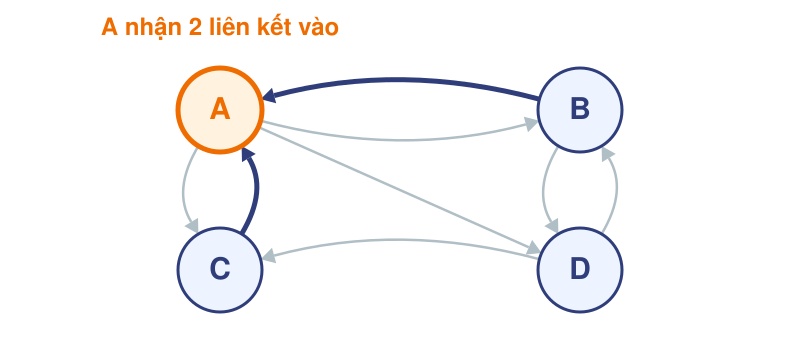
| Trang | Liên kết vào từ | Số liên kết vào |
|---|---|---|
| A | B, C | 2 |
| B | A, D | 2 |
| C | A, D | 2 |
| D | A, B | 2 |
Chuẩn hóa trên ví dụ này: \(2/8=1/4\) mỗi trang; bốn trang đồng hạng.
Cách đếm này cho mọi liên kết cùng trọng lượng, chưa xét điểm và số liên kết ra của trang nguồn.
Nguồn: MMDS, mục 5.1.2, Ví dụ 5.1, trang 178–179.
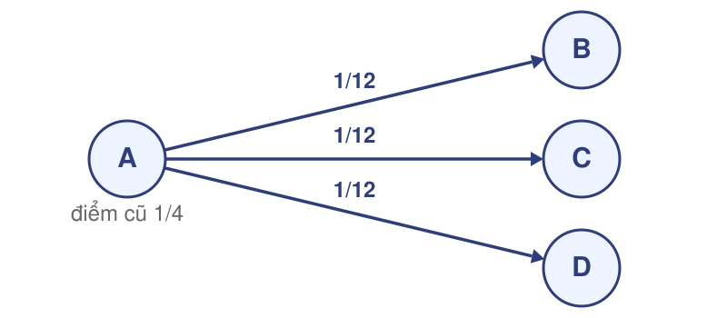
Khởi đầu mỗi trang có \(1/4\) điểm. A chia đều cho ba đích: mỗi đích nhận \((1/4)/3=1/12\).
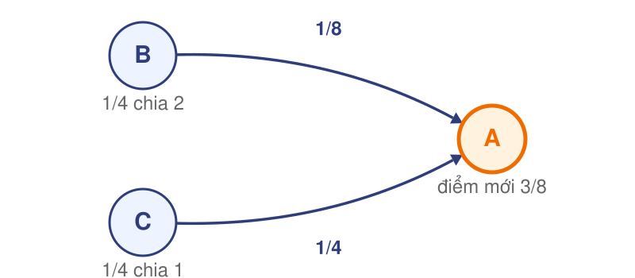
B chia cho hai đích, C chỉ cho một đích. A nhận \(1/8+1/4=3/8\) điểm.
Điểm cũ: \(r_A=r_B=r_C=r_D=1/4\). Tất cả các trang tính đồng thời từ điểm cũ.
| Trang | Các đóng góp nhận được | Điểm mới |
|---|---|---|
| A | \(1/8+1/4\) | \(9/24=3/8\) |
| B | \(1/12+1/8\) | \(5/24\) |
| C | \(1/12+1/8\) | \(5/24\) |
| D | \(1/12+1/8\) | \(5/24\) |
Tổng \(=9/24+3\times 5/24=1\). Thứ tự sau một vòng: A đứng trước B, C, D đồng hạng.
Kết quả một vòng chưa phải điểm PageRank cuối cùng.
Câu hỏi: áp dụng vào đồ thị bốn trang vừa xét.
Dữ kiện: MMDS, mục 5.1.2, Ví dụ 5.1–5.2.
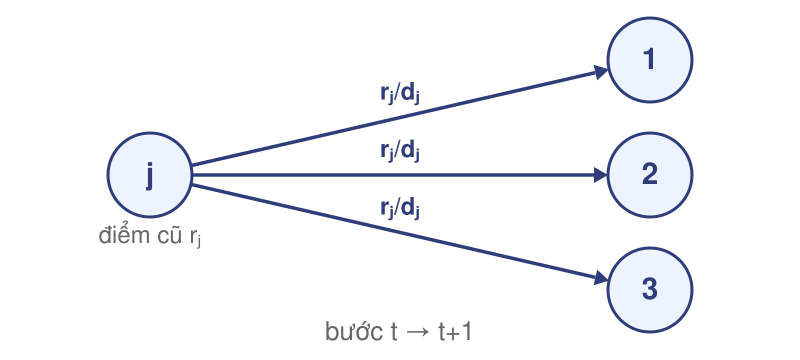
Phần 2 đã chạy một vòng chia điểm trên đồ thị ví dụ.
Cần hoàn thiện quy tắc để lặp trên đồ thị bất kỳ.
Điểm \(r_i\) là xác suất người đọc đang ở trang \(i\); \(d_j\) là số liên kết ra của trang \(j\).
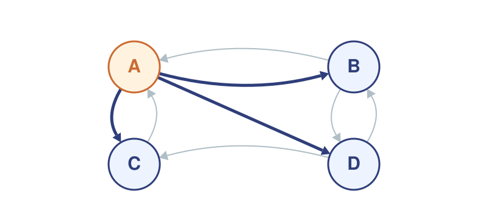
\(d_j\) là số liên kết ra của trang \(j\) (bậc ra).
Ma trận \(M_0\) có \(n\) hàng và \(n\) cột:
\[(M_0)_{ij}=\begin{cases}1/d_j & \text{nếu } j\to i,\ d_j>0\\ 0 & \text{nếu không}\end{cases}\]
Cột \(j\) là trang nguồn, hàng \(i\) là trang đích.
Cột A theo thứ tự hàng A, B, C, D là \((0,1/3,1/3,1/3)^T\): A chia cho ba đích.
Khi mọi trang đều có liên kết ra, một bước là:
\[r^{t+1}=M_0\,r^t\]
Đồ thị bốn trang của phần trước:
\(r^0=(1/4,1/4,1/4,1/4)^T\)
\(r^1=(9/24,5/24,5/24,5/24)^T\)
Quy tắc khởi tạo: \(r^0\) đều \(1/n\). Kết quả một vòng khớp đúng phép chia điểm của phần 2; mục tiêu của phép lặp là tìm điểm \(r^*\) không đổi qua cập nhật.
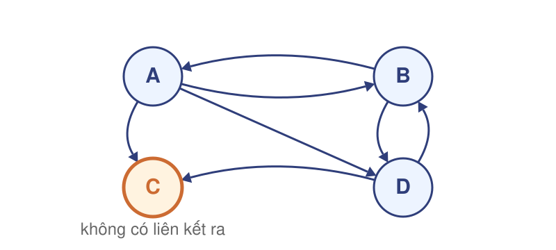
\(r^0=(1/4,1/4,1/4,1/4)^T\), một vòng lặp thô:
\[M_0r^0=\left(3/24,\ 5/24,\ 5/24,\ 5/24\right)^T\]
Tổng \(=18/24=3/4\): thiếu \(1/4\) điểm của C.
C vẫn nhận điểm, nhưng không có liên kết ra để chuyển điểm cũ của mình.
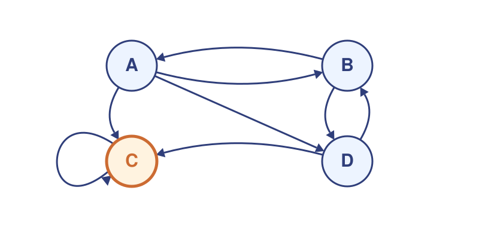
Thay C→A bằng C→C: C là bẫy một nút.
Người đã đến C không rời khỏi C khi bám theo liên kết.
Lặp thô trên ví dụ này dồn toàn bộ điểm về C.
Bẫy liên kết: nhóm trang có liên kết ra nhưng không trỏ ra ngoài nhóm.
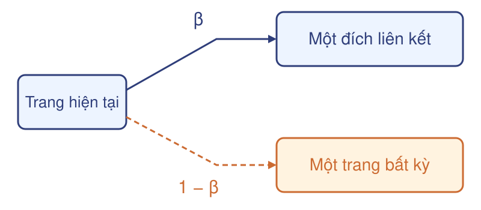
Với xác suất \(\beta\): đi theo một liên kết ra (chia đều).
Với xác suất \(1-\beta\): nhảy đều tới 1 trang bất kỳ, kể cả trang hiện tại.
\(0<\beta<1\); quy ước ví dụ \(\beta=4/5\).
Bước nhảy cho người đọc cơ hội rời bẫy liên kết và tới bất kỳ trang nào.
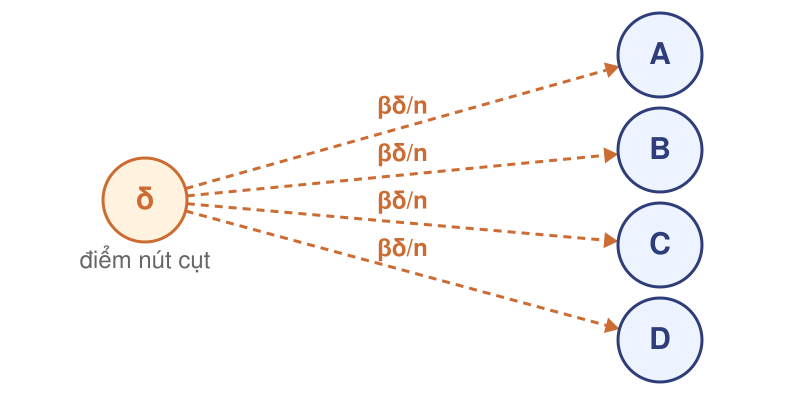
\(\delta=\sum_{j:\,d_j=0}r_j\): tổng điểm đang ở các nút cụt.
Ở nhánh theo liên kết của nút cụt: chọn đều 1 trang bất kỳ.
Mỗi trang nhận thêm \(\beta\delta/n\).
Trên biến thể nút cụt, \(\delta=1/4\). Đây là phép chia theo mô hình, không phải liên kết thật của đồ thị.
\[r_i^{\,t+1}=\beta\sum_{j:\,j\to i}\frac{r_j^{\,t}}{d_j}+\frac{(1-\beta)+\beta\,\delta^t}{n}\]
Ba thành phần cùng dùng điểm cũ \(r^t\); khởi tạo \(r^0\) đều \(1/n\). Khi không có nút cụt, \(\delta^t=0\) và công thức còn phần theo liên kết cộng bước nhảy.
Đồ thị gốc, không nút cụt nên \(\delta=0\); \(\beta=4/5\); \(r^0\) đều \(1/4\).
| Trang | \(\beta\,M_0r^0\) | \((1-\beta)/n\) | \(r^1\) |
|---|---|---|---|
| A | \(\dfrac{4}{5}\cdot\dfrac{3}{8}=\dfrac{3}{10}\) | \(\dfrac{1}{20}\) | \(\dfrac{7}{20}\) |
| B | \(\dfrac{4}{5}\cdot\dfrac{5}{24}=\dfrac{1}{6}\) | \(\dfrac{1}{20}\) | \(\dfrac{13}{60}\) |
| C | \(\dfrac{4}{5}\cdot\dfrac{5}{24}=\dfrac{1}{6}\) | \(\dfrac{1}{20}\) | \(\dfrac{13}{60}\) |
| D | \(\dfrac{4}{5}\cdot\dfrac{5}{24}=\dfrac{1}{6}\) | \(\dfrac{1}{20}\) | \(\dfrac{13}{60}\) |
Tổng \(=7/20+3\times 13/60=1\). Với \(\beta=4/5\), mô hình mới cho kết quả khác phần 2 vì thêm bước nhảy.
Xóa C→A khỏi đồ thị: C là nút cụt, \(\delta^0=1/4\); \(\beta=4/5\); \(r^0\) đều \(1/4\).
Thành phần chung: \(\dfrac{(1-\beta)+\beta\delta^0}{n}=\dfrac{1/5+1/5}{4}=\dfrac{1}{10}\).
| Trang | \(\beta\,M_0r^0\) | Chung | \(r^1\) |
|---|---|---|---|
| A | \(\dfrac{4}{5}\cdot\dfrac{1}{8}=\dfrac{1}{10}\) | \(\dfrac{1}{10}\) | \(\dfrac{1}{5}\) |
| B | \(\dfrac{4}{5}\cdot\dfrac{5}{24}=\dfrac{1}{6}\) | \(\dfrac{1}{10}\) | \(\dfrac{4}{15}\) |
| C | \(\dfrac{4}{5}\cdot\dfrac{5}{24}=\dfrac{1}{6}\) | \(\dfrac{1}{10}\) | \(\dfrac{4}{15}\) |
| D | \(\dfrac{4}{5}\cdot\dfrac{5}{24}=\dfrac{1}{6}\) | \(\dfrac{1}{10}\) | \(\dfrac{4}{15}\) |
Tổng \(=1/5+3\times 4/15=1\): điểm của C được hoàn lại đầy đủ qua phần bù.
Vào: danh sách kề của \(G\), \(n\ge1\), \(0<\beta<1\), \(\tau>0\), \(T_{\max}\) nguyên dương.
Ra: vector điểm xấp xỉ và trạng thái đạt ngưỡng hoặc chưa đạt.
r = (1/n, ..., 1/n)
lặp t = 1, ..., Tmax:
delta = tổng r[j] của các nút cụt
với mỗi i: new[i] = (1 - beta + beta * delta) / n
với mỗi j có d[j] > 0:
với mỗi i thuộc out[j]: new[i] += beta * r[j] / d[j]
Delta = tổng |new[i] - r[i]|
r = new
nếu Delta <= tau: trả về (r, đạt ngưỡng)
trả về (r, chưa đạt)
\(\mathrm{out}[j]\) chứa các đích của \(j\); mọi đóng góp trong một vòng dùng điểm cũ.
\[\Delta_t=\sum_i\left|r_i^{\,t+1}-r_i^{\,t}\right|\]
| Vòng | \(r^t\) (A; B, C, D) |
|---|---|
| 1 | \(7/20;\ 13/60\) |
| 2 | \(31/100;\ 23/100\) |
Ví dụ đồ thị gốc, \(\beta=4/5\): \(\Delta_1=\left|31/100-7/20\right|+3\left|23/100-13/60\right|=\dfrac{2}{25}=0{,}08\).
So sánh \(\Delta_t\) với \(\tau\): chỉ là độ thay đổi giữa hai vòng, không phải sai số với nghiệm. Dừng khi \(\Delta_t\le\tau\); \(\tau\) là ngưỡng dừng, \(T_{\max}\) là giới hạn số vòng.
Giả sử điểm cũ không âm và có tổng bằng 1.
\[\underbrace{\beta(1-\delta)}_{\text{theo liên kết}}+\underbrace{\beta\delta}_{\text{bù nút cụt}}+\underbrace{(1-\beta)}_{\text{bước nhảy}}=1\]
Các phần đóng góp đều không âm và có tổng bằng 1; điểm mới vẫn là một phân phối xác suất.
Gọi \(F\) là phép cập nhật. Đo khoảng cách bằng tổng chênh lệch tuyệt đối:
\(\|x-y\|_1=\sum_i|x_i-y_i|\).
\[\|F(x)-F(y)\|_1\le\beta\|x-y\|_1\]
Với \(0<\beta<1\), bước nhảy đều và bù nút cụt, khoảng cách giảm qua mỗi vòng. Dãy lặp hội tụ tới duy nhất một phân phối không đổi \(r^*\) — PageRank của mô hình đầy đủ.
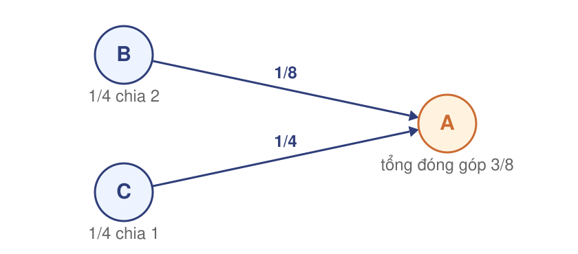
Cộng đóng góp \(r_j/d_j\) theo đích — A nhận \(1/8+1/4=3/8\) từ B và C; sau đó nhân \(\beta\) và cộng phần chung.
Câu hỏi: áp dụng mô hình vừa xây dựng.
Dữ kiện: MMDS, mục 5.1.2–5.1.5, Ví dụ 5.1–5.6, trang 178–187.
Giữ nguyên quy tắc cập nhật PageRank.
Tổ chức dữ liệu và chia phép tính khi đồ thị, véc tơ không vừa bộ nhớ chính (RAM).
\(n\) trang, \(m\) liên kết.
Ma trận đặc lưu \(n^2\) ô; danh sách liên kết chỉ ghi các cạnh có thật.
Khi \(m\ll n^2\), phần lớn ô bằng 0; biểu diễn thưa tránh lưu các ô này.
| Nguồn | Bậc \(d_j\) | Đích |
|---|---|---|
| A | 3 | B, C, D |
| B | 2 | A, D |
| C | 1 | A |
| D | 2 | B, C |
Mỗi bản ghi: (nguồn, \(d_j\), danh sách đích).
Nút cụt: giữ bản ghi với \(d_j=0\), danh sách đích rỗng.
Suy ra \((M_0)_{ij}=1/d_j\) khi có cạnh \(j\to i\).
Bảng theo MMDS Hình 5.11 cho đồ thị bốn trang; ma trận thưa không cần lưu từng giá trị \(1/d_j\).
Đặt \(z=M_0r\): chia \(r,z\) thành \(k\) dải, \(M_0\) thành \(k^2\) khối; ví dụ \(k=2\), nguồn A,B và C,D.
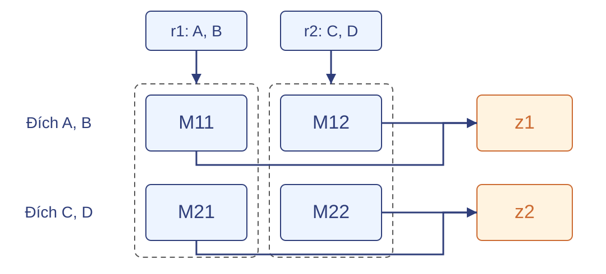
Tác vụ \(M_{ab}\) giữ dải vào \(r_b\) và dải tích lũy \(z_a\); dữ liệu khối được đọc tuần tự từng bản ghi.
| Nguồn | \(d_j\) | Đích |
|---|---|---|
| A | 3 | B |
| B | 2 | A |
| Nguồn | \(d_j\) | Đích |
|---|---|---|
| A | 3 | C, D |
| B | 2 | D |
Với \(k=2\) (MMDS Hình 5.13, 5.14): \(d_A=3\) toàn cục được lặp lại ở cả hai khối; mỗi cạnh chỉ thuộc đúng một khối theo cặp (nguồn, đích).
Vào: khối \(B_{ab}\) gồm các bản ghi nguồn–bậc ra–đích trong khối, và dải điểm \(r_b\).
Map(B_ab, r_b):
với mỗi (j, dj, dests) trong B_ab:
với mỗi i trong dests:
yield(i, r_b[j] / dj)
Combine(i, values):
yield(i, sum(values))
Khóa là trang đích; Combine cộng các đóng góp cùng khóa tại chỗ, trước khi chuyển dữ liệu.
\(L_i\) là danh sách đóng góp hoặc tổng từng phần có khóa \(i\).
Reduce(i, L_i):
z_i = sum(L_i)
return(i, beta * z_i + (1 - beta + beta * delta) / n)
Mỗi trang nhận phần chung đúng một lần, sau khi đã cộng hết các đóng góp.
Đồ thị gốc, \(r^0\) đều \(1/4\), \(\beta=4/5\), \(k=2\); không có nút cụt.
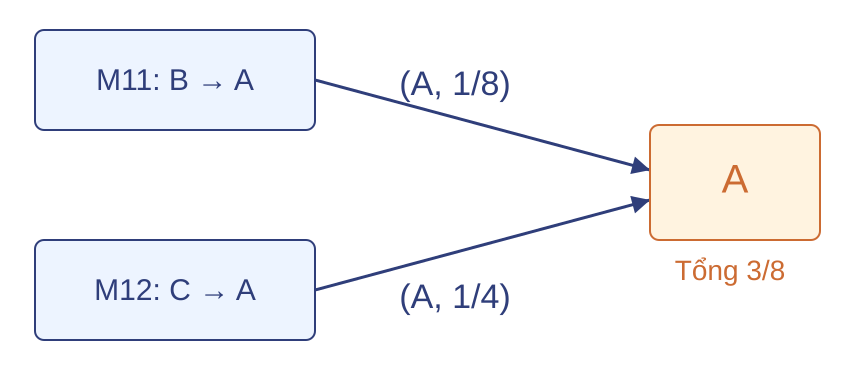
\(z_A=1/8+1/4=3/8\).
\[r_A^1=\frac45\cdot\frac38+\frac1{20}=\frac7{20}\]
Hai tác vụ khác nhau cùng tạo khóa A; kết quả cuối khớp phép tính một máy của phần3.
Mọi tác vụ dùng cùng điểm cũ. Gọi \(V_b\) là tập trang nguồn thuộc dải \(b\).
\[\sum_{b=1}^{k}\ \sum_{j\in V_b:\ j\to i}\frac{r_j}{d_j}=\sum_{j:\ j\to i}\frac{r_j}{d_j}\]
Mỗi cạnh thuộc một khối; Map tạo đúng một đóng góp, Combine và Reduce chỉ gộp lại.
\(\delta\) được tính một lần theo nguồn, phần chung cộng một lần theo đích: kết quả bằng phép cập nhật tuần tự trên số thực chính xác.
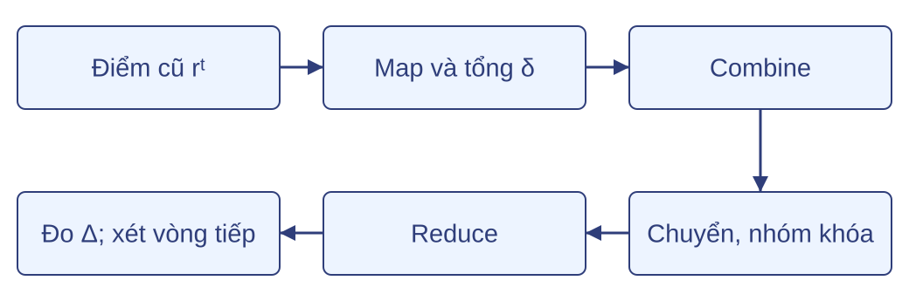
\(k^2\) là số tác vụ khối, không phải số máy. Với \(k=2\), bốn tác vụ có thể chạy trên hai máy.
Câu hỏi: vận dụng cách chia khối.
Phần sau: phân tích chi phí chi tiết — bộ nhớ RAM, số byte truyền và thời gian chạy.
Bốn đại lượng để đánh giá cách tổ chức tính PageRank theo khối.
Số byte để biểu diễn đồ thị.
Số byte RAM mà một tác vụ cần giữ.
Tổng thời gian tính nếu thực hiện tuần tự.
Thời gian chạy, có thể giảm khi thêm máy.
Ký hiệu dùng suốt phần này: \(n\) trang, \(m\) liên kết, \(k\) dải mỗi chiều, \(p\) máy.
Quy ước: một giá trị điểm dùng số thực 8 byte, một mã trang hoặc bậc ra dùng số nguyên 4 byte, vừa 32 bit.
| Cách biểu diễn | Công thức | Ví dụ \(n=4,\ m=8\) |
|---|---|---|
| Ma trận đặc | \(S_{\text{dense}}=8n^2\) | 128 byte |
| Danh sách liên kết, mã nguồn ngầm | \(S_{\text{adj}}\approx 4(n+m)\) | 48 byte |
\(S_{\text{adj}}\): \(n\) bậc ra cộng \(m\) mã đích, mỗi cái 4 byte, không tính siêu dữ liệu.
Tỷ số dung lượng \(S_{\text{dense}}/S_{\text{adj}}\) xấp xỉ \(2n^2/(n+m)\); biểu diễn thưa có lợi khi \(m\ll n^2\).
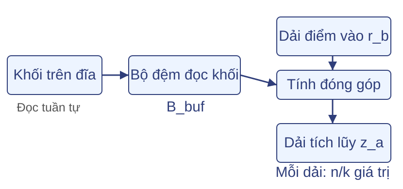
Giả sử \(k\) chia hết \(n\); mỗi dải có \(n/k\) giá trị.
\[B_{\text{task}}\approx \frac{16n}{k}+B_{\text{buf}}\]
Ví dụ \(n=4,\ k=2\): \(2\cdot 2\cdot 8=32\) byte cộng \(B_{\text{buf}}\).
Đây là bộ nhớ làm việc cho hai dải véc tơ, không phải toàn bộ RAM của hệ thống.
\(I\): tổng số byte đầu vào Map cho phép nhân theo khối.
\[I = S_{\text{blocks}} + 8kn\]
Mỗi khối đọc một lần; mỗi dải điểm phục vụ \(k\) tác vụ, nên toàn véc tơ được đọc \(k\) lần.
\(S_{\text{blocks}}=88\) byte (7 bản ghi nguồn, mỗi bản ghi 8 byte; 8 mã đích, mỗi mã 4 byte).
Véc tơ: \(8\cdot 2\cdot 4=64\) byte.
\(I=88+64=152\) byte.
Chỉ đầu vào các Map của phép nhân theo khối trong một vòng.
Dữ liệu cục bộ không qua mạng.
\(I\) chưa gồm các pha tổng hợp \(\delta\), kiểm tra \(\Delta\) và điều phối.
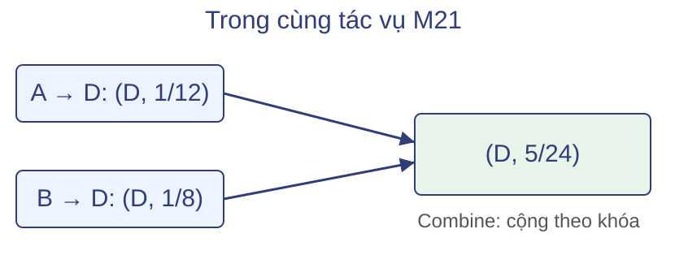
| Phương án | Bản ghi | Byte |
|---|---|---|
| Không Combine | \(m=8\) bản ghi cạnh, 12 byte/bản ghi | 96 |
| Có Combine | \(q=7\) bản ghi khóa, 12 byte/bản ghi | 84 |
Khóa 4 byte + giá trị 8 byte. \(H\) là tổng đầu vào Reduce sau gộp cục bộ.
Với \(I=152\) byte: \(C=I+H\) giảm từ \(248\) xuống \(236\) byte; chưa tính toàn bộ một vòng.
Mỗi cạnh tốn \(c_e\) giây: \(W=m\cdot c_e\). Bỏ thời gian đọc, truyền dữ liệu và lập lịch.
Công việc bốn khối: \(2c_e,\ 2c_e,\ 3c_e,\ 1c_e\) — tổng \(W=8c_e\) không đổi.
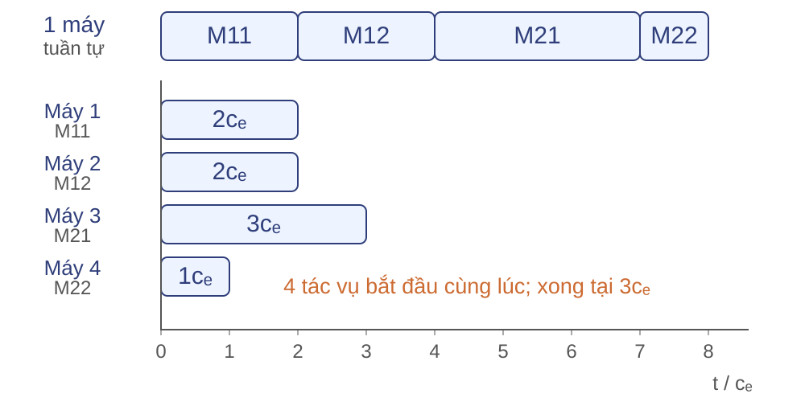
Mỗi máy chạy một tác vụ: \(T_{\mathrm{map}}=3c_e\), hệ số tăng tốc \(8/3\); tổng công việc vẫn là \(8c_e\).
\(Q\): số byte thực sự truyền qua mạng; \(b_{\mathrm{eff}}\): băng thông hiệu quả tổng hợp (byte/giây).
\[T_{\mathrm{shuffle}}\ge \frac{Q}{b_{\mathrm{eff}}}\]
Nếu toàn bộ 7 bản ghi sau Combine đi qua mạng: \(Q=7\cdot12=84\) byte, bỏ phần phụ trội và nén.
\(I,H,C\) đếm dữ liệu các tác vụ xử lý; \(Q\) còn phụ thuộc vị trí dữ liệu và tác vụ.
Giả định các pha không chồng nhau:
\[T_{\mathrm{round}}\approx T_\delta+T_{\mathrm{map}}+T_{\mathrm{shuffle}}+T_{\mathrm{reduce}}+T_{\mathrm{sync}}\]
Với \(L\) vòng đã chạy: \(T_{\mathrm{job}}=T_{\mathrm{setup}}+\sum_{t=1}^{L}T_{\mathrm{round},t}\); \(T_{\mathrm{setup}}\) là thời gian khởi tạo.
Thêm máy có thể rút ngắn pha Map; mạng, gộp và đồng bộ vẫn góp vào thời gian cả công việc.
Câu hỏi: dùng công thức của phần này để giải ba bài sau.
Biểu diễn thưa giảm lưu trữ, chia khối giảm RAM, thêm máy có thể giảm \(T_{\text{map}}\) nhưng không giảm mọi chi phí.
Phần sau: cài đặt phép cập nhật và kiểm chứng kết quả trên đồ thị nhỏ.
Python 3, chỉ thư viện chuẩn — không cần pip.
Chạy trên một máy để kiểm công thức.
Mã: Tải pagerank.py
Đi từ dữ liệu đồ thị tới chương trình chạy được và các phép kiểm bằng số.
adj = {
"A": ["B", "C", "D"],
"B": ["A", "D"],
"C": ["A"],
"D": ["B", "C"],
}pagerank(adj, beta=0.8, tol=1e-8, max_iter=100)
Trả về dict: rank, converged, iterations, delta.
Giữ mọi nút, kể cả nút không có liên kết vào hoặc không có liên kết ra.
Điều kiện vào: \(n\ge1\); đích phải có trong dict; gộp cạnh trùng trong bản sao; \(0<\beta<1\), \(\tau>0\), \(T_{\max}\) nguyên dương. Kiểm tra đầy đủ nằm trong tệp mã.
def step(adj, r, beta):
n = len(adj)
delta = sum(r[j] for j in adj if not adj[j])
common = (1.0 - beta + beta * delta) / n
new = {i: common for i in adj}
for j, targets in adj.items():
if not targets:
continue
share = beta * r[j] / len(targets)
for i in targets:
new[i] += share
return newcommon cấp phần chung cho mọi trang; nguồn có đích chia điểm theo liên kết. Điểm cũ \(r\) chỉ được đọc.
n = len(adj)
r = {i: 1.0 / n for i in adj}
iterations, converged = 0, False
for _ in range(max_iter):
new = step(adj, r, beta)
delta = sum(abs(new[i] - r[i]) for i in adj)
r = new
iterations += 1
if delta <= tol:
converged = True
break
# Trả r, converged, iterations, delta sau vòng lặp.\(r^0\) đều \(1/n\); mỗi vòng so sánh \(\Delta_t=\sum_i|r_i^{t+1}-r_i^t|\) với \(\tau\). \(\tau\) là ngưỡng độ thay đổi giữa hai vòng, không phải chặn sai số so với nghiệm.
python3 materials/lec-03/code/pagerank.py \
--variant base --beta 0.8 --tol 1e-8 --max-iter 100Chạy từ thư mục 2627-1. Đầu ra là JSON: rank, converged, iterations, delta, rank_sum.
Giá trị hội tụ của base:
\(r_A=9/28\approx0{,}321429\)
\(r_B=r_C=r_D=19/84\approx0{,}226190\)
Kết quả: đạt ngưỡng sau 20 vòng; độ thay đổi cuối \(\Delta\approx 5{,}50\times 10^{-9}\). Tổng điểm xấp xỉ 1.
| Phép kiểm | Giá trị đúng |
|---|---|
| Tổng điểm, dấu | \(\sum_i r_i\approx1\), mọi \(r_i\ge0\) |
| Một bước, base, \(r^0\) đều, \(\beta=0{,}8\) | \(r_A=7/20\); \(r_B=r_C=r_D=13/60\) |
| Một bước, dead (bỏ C→A), cùng \(r^0\), \(\beta\) | \(r_A=1/5\); \(r_B=r_C=r_D=4/15\) |
So sánh bằng dung sai: abs(got - want) <= 1e-12, không dùng so sánh bằng của số thực.
Kiểm một bước bằng bảng tính tay; kiểm thêm trường hợp toàn nút cụt và một nút trong hướng dẫn.
Câu hỏi: tìm và sửa lỗi trong ba đoạn cập nhật sau.
Tổng kết phần: công thức phần 3 → mã một vòng → vòng lặp → chạy và kiểm bằng số.